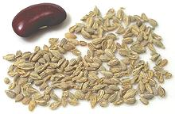
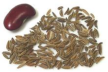
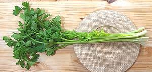
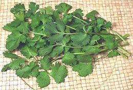
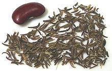
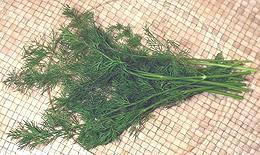
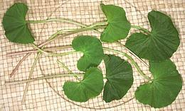

SAFARI
Users
Parsleys
This very important culinary family grows the world around, mainly in temperate climates but some into the subtropics.
Alexanders
[Horse Parsley, Black Lovage, Macedonia Parsley, Wild Celery; Smyrnium olusatrum]
Alexanders is native to the Mediterranean region and has been used as a
culinary and medicinal herb from the times of ancient Greece through the
Medieval period. It has since fallen almost entirely out of use,
displaced by celery. This plant still grows wild through much of Europe,
and as far north as the British Isles, having been carried far and wide
by the Roman Legions. Its flavor is between celery and parsley, with
leaves, stems, roots and flower buds all edible. The small black seeds
are also edible and were used as a substitute for pepper.
Photo by tato grassso distributed under license Creative
Commons
Attribution-ShareAlike 3.0 Unported.
Angelica
[Angelica archangelica (garden angelica), Angelica sylvestris (wild angelica)]
Angelica is native to the subarctic regions of the northern hemisphere and grows as far north as Lapland. While there are many angelica species, only the two listed above are of culinary interest. To have it on hand you must grow it yourself - it likes damp soil, growing leaves the first year and going to seed the second year.
Angelica grows wild in Scandinavia where it is quite popular and is
cultivated in one region of France, mostly for flavoring liqueurs and
medicinal properties. It is also used to flavor omelets, some fish dishes
and jams. Angelica is more gently "perfumy" than other members of the
parsley tribe. Wild angelica has been used mainly as an emergency food.
Anise
 [Pimpinella anisum]
Native to the Eastern Mediterranean region, the dried fruits are an
important flavoring there. The vegetable sold as "Anise" in grocery
stores is actually Fennel. Anise is not sold as a fresh herb or
vegetable.
Ajwain
[Carom seed, Ajowan; Omam (Tamil); Ajmo (Gujarati); Owa (Marathi); Trachyspermum copticum]
Originating in Egypt or the Middle East, the dried fruits of this plant are now used mainly in India but also in Afghanistan, Egypt, Eritrea and Ethiopia. It is said to reduce flatulence from beans if cooked with them. Ajwain contains thymol and raw it smells and tastes like thyme but stronger, harsher and with some bitterness. Raw ajwain can overwhelm a dish if not used with discretion. In India it is always dry roasted or fried before using, which tempers the flavor. Some sources say ajwain is lovage seed but that is incorrect.
The leaves are also edible, but this plant is not cultivated in
North America. Ajwain seeds should be stored in a tightly sealed
container away from heat and sunlight, but still should be used within
6 months or so because the flavorful oils evaporate fairly quickly.
This spice has an affinity for breads and starchy foods, including
potatoes, beans and lentils. It is also used in Takdas (Tempering),
oil fried spices used as a finishing touch in many Indian dishes,
particularly in the south. It is considered a digestive aid and to
reduce flatulence from beans.
Arracacha
[Apio (Puerto Rico), Apio Criollo (Venezuela), Zanahoria Blanca (Ecuador), Virraca (Peru), Mandioquinha / Batata-baroa (Brazil), Arracacia xanthorriza]
This parsley root, native to the Andes region of South America is a major
crop in Brazil but popular all over South America and the Caribbean region.
The flesh may be white, yellow or purple. It is put to uses similar to
potatoes but has a more distinctive flavor and in some cultivars intense
color. Leaves are used as a flavoring herb and young stems are cooked as
a vegetable similarly to celery. Roots sold in Puerto Rico are quite
different from those in the photo - see
Deatils and Cooking.
Photo by Germarquezm licensed under
Creative Commons
Attribution-ShareAlike v3.0 Unported.
Caraway
 [Anethum graveolens]
Native to western Asia and Europe the dried fruits of this plant are
used mostly in the cuisines of Central and Northern Europe to flavor bread,
sauerkraut, cheeses, liquors, casseroles and other foods. They also have a
long history of medicinal use. The roots may be cooked as a root vegetable
but are not grown commercially for that purpose.
Carrot
[Daucus carota]
The carrot probably originated in Afghanistan which is still the center of diversity for wild carrots.
Domestic carrots
- [Daucus carota subsp. sativus] were first used mainly for their greens, but durring Medieval and Rennaisance times, versions with larger, non-woody roots were developed. The orange root carrot so familiar today first appeared in the Netherlands during the 17th century. Our market varieties are naturally white or orange, but yellow, red, maroon, purple and nearly black varieties have been developed, and one that's purple on the outside and orange on the inside. They now come in many sizes and shapes. Details and Cooking.Celery
[Apium graveolens (common), Apium prostratum (Australian)] Except for the Australian variety (Apium prostratum, all common celeries are cultivars of a single species, A. graveolens. This species is native to the Mediterranean region. While celery was well known to the ancient Egyptians it is not known if they cultivated it, since it was a common weed there. Celery was definitely cultivated during the Greek and Roman empires. Before Rome, celery was used medicinally, but the Romans seem to have started cooking with it, though with caution. Development of modern varieties with thick stems or large "roots" began in the 1600s.
Stalk Celery[A. graveolens var dulce]
Celery grown in North America is almost entirely the Pascal cultivar,
which produces very large, mild flavored stems that are less fibrous
than earlier varieties were. California is far and away the largest
producer, but a fair amount is grown in Florida. The photo specimen
was 27 inches long and weighed 1-3/4 pounds, but heads over 3 pounds
are common. There are also red varieties but these are considered
less desirable. In Europe a "self blanching" variety is favored.
Details and Cooking.
Chinese / Cutting Celery [Kinchay (Philippines); Khan Choy (China); Keun Chai (Thai); Cutting Celery, Soup Celery Celeri à Couper (French); Celero (Italy); Selinon (Latin); A. graveolens var. secalinum]
Probably much like celery grown in Europe before 1600, this plant has
relatively thin stems, is stronger in flavor and is more fibrous than
Pascal celery. It is now grown in California and available in the many
Asian markets here. If your recipe calls for it and you can't get it,
buy the leafiest head of regular celery you can find, and use the part
above the first joint where the flavor is stronger. The specimens
were 30 inches long with stems about 1/2 inch wide 5 inches above
the leaf base. Both stems and leaves are used in recipes from China
and Southeast Asia.
Details and Cooking.
Root Celery[Celeriac, Knob celery, Turnip rooted celery, A. graveolens var rapaceum]
Developed in Europe during the Renaissance, this form is particularly
popular in France, Germany, Poland, Russia and Turkey. Once little
known in North America, celeriac has lately become more widely
available, with California a major producer. The part eaten is not
actually a root, but a swollen stem, from which the leaves sprout.
These "roots" range in size from 7 ounces to over 2 pounds. The larger
of the photo specimens was 6-1/2 inches long, 4-1/4 inches diameter
and weighed 2 pounds.
Details and Cooking.
Wild Celery[Smallage; A. graveolens var graveolens] This ancestor of the domesticated celeries looks pretty much like Chinese / Cutting Celery, which is also sometimes called "Smallage". It is grown for production of celery seed, putting more of its energy into seeds rather than stems and leaves. Celery Seed [A. graveolens var graveolens]
[A. graveolens var graveolens]
Celery seed (actually very tiny fruits) is produced from "Wild Celery"
rather than the Pascal variety. Much of what is sold as "celery seed"
is mixed with, or even entirely Lovage
seed. Apparently lovage is a better seed producer, but is very closely
related to and very similar to wild celery. Celery seed has been
used for thousands of years, both as a flavoring spice and for
its medicinal properties.
Details and Cooking.
|
Chervil
[Gourmet's parsley, Garden Chervil, Anthriscus cerefolium, Apium prostratum (Australian)]
This plant, native to the Caucasus, was spread through Europe during the Roman Empire and today is used there mostly in France. The leaves have a more delicate flavor than parsley and with a hint of liquorice. Today it is commonly called for in gourmet magazine recipes to help you feel inadequate because you can't get it. I imagine it can be had at the Santa Monica Farmer's Market, but nothing's going to get me to drive to Santa Monica at dawn on Saturday to do battle with desperate chefs from all those fancy West Side restaurants.
On the other hand, it can almost always be found put up in 26 oz jars of brine at markets serving an Armenian or Turkish community (see Details and Cooking).
There is another variety which, as with parsley, is grown for its roots
rather than leaves. This is commonly used in France to flavor soups and
pretty much nowhere else.
Photo by Derzsi Elekes Andor distributed under license
Creative Commons
Attribution ShareAlike v4.0 International.
Cicely
[Sweet Cicely, Myrrhis odorata]
Native to Central Europe, leaves of this plant are used as an herb in
the cuisines of Scandinavia and Germany, and to flavor alcoholic beverages.
It has a strong scent and flavor similar to anise. Roots and seeds are
also edible and used in that region, and it has medicinal uses.
Photo by H. Zell distributed under license
Creative Commons
Attribution-ShareAlike v3.0 Unported.
Coriander - Cilantro
Originating in Western Asia and/or Southern Europe, coriander has been cultivated at least since the days of Tutankhamen and gathered wild from deep into prehistory. It was brought to North America by the first English and Dutch settlers. All parts of the plant are edible.
Cilantro [Coriander Leaf; Won Soy, Wonsoy (Philippines); Ngo, Mui (Viet); Coriandolo (Italy); Xiang cai, Heung choy (China)] This herb was once in common use all over Europe, but has been almost completely supplanted by parsley. In Europe, only traditional recipes in southern Portugal and Spain's Canary Islands still call for it. On the other hand, it is greatly used in most non-European cuisines worldwide. There is a strong "I hate Cilantro" movement on the Internet, but the condition has proven curable by exposure. The roots are also edible but are used only in the cuisine of
Thailand, and to a lesser extent in some of its neighbors. Used as a
component of curry pastes and in some soups, they are still hard to
get even here in Southern California.
Details and Cooking.
Coriander Seed
These "seeds" are actually dried
fruits containing the seeds. While not now used in Europe to anywhere
near the extent they were in Medieval times, coriander seeds are still
used in pickling and sausage making. In India they are used in vast
quantity for all manner of curries and spice mixtures, almost always
with Cumin at a ratio of about 1 T Coriander to 1 t cumin. This
combination was also popular in Imperial Rome and is used in Africa
and the Middle East.
Details and Cooking.
|
Culantro
 [Long coriander, Sawtooth Herb, Mexican coriander Donnia; Chickory,
Amazonian Chicory (Brazil); Ngo gai, Mui ta, Ngo tau (Viet);
Eryngium foetidum]
[Long coriander, Sawtooth Herb, Mexican coriander Donnia; Chickory,
Amazonian Chicory (Brazil); Ngo gai, Mui ta, Ngo tau (Viet);
Eryngium foetidum]
This herb is native to Mexico, Central and South America, but is now
grown worldwide. As a culinary herb it is most important in Southeast
Asia, the far northeast of India, and the Caribbean. It is sometimes
described as tasting like Cilantro, but stronger. I find the resemblance
detectable, but not close. Unlike Cilantro, it takes well to drying,
holding both color and flavor.
Details and Cooking.
Cumin
[Jeera (India), Cuminum cyminum]
Probably originating in southwestern Asia, this plant has been
native to the region from the eastern Mediterranean to eastern India
since prehistoric times. This is one of the most important spices in
Indian cuisine, generally combined 1 teaspoon to 1 Tablespoon coriander
seed.
Details and Cooking.
Cumin - Black
 [Kala Jeera, Shahi Jeera (India); Zireh Kuhi (Persia); Siyoh Dona (Tajiki), Bunium persicum alt? B. bulbocastanum]
Fruits of this plant are used in the cuisines of northern India,
Afghanistan, Tajikistan and Persia - and are all but unknown outside that
region, though the plant grows wild as far as southeastern Europe. The
leaves can be used as is parsley and the roots cooked, said to taste
like sweet chestnuts, but only the fruits are available in North America.
Caution: This spice is not to be confused with
Nigella, often also called "Black Cumin". This is not an English
translation error, nigella is actually called "black cumin" in Bengal,
where many of the early Indian immigrants came from (most of Bengal is
now Bangladesh). Visually, they are easy to tell apart - nigella seeds
are tiny and not elongated.
Details and Cooking.
Dill
[Shubit (Semitic); Shepu, Sowa (Asia); Thi la (Vietnam); Anethum graveolens] Originating in Eastern Europe and/or Western Asia, dill has been cultivated since Neolithic times. The Talmud (Jewish law) requires tithes be paid in dill seeds and stems. and some stems were found in the tomb of Tutankhamen.
Dill [Dill Weed]
A favorite herb in Eastern Europe, Scandinavia, the Caucasus and
into Persia and "the Stans", fresh dill is widely available in Los
Angeles where those eths abound, but many Americans know it only as
something that goes into dill pickles. Dill is also used through India
and Southeast Asia, particularly Vietnam.
Details and Cooking.
Dill SeedDill seed is surprisingly hard to find in major supermarkets here in Southern California, and can be in tiny quantity for an outrageous price when they are found there. It can, however, be easily found at reasonable prices in Indian and many other ethnic markets. Details and Cooking. |
Fennels
[genus Foeniculum (fennel proper) | genus Ferula (giant fennel) | Hippomarathrum (horse fennel)]
Asafoetida[Ferula assafoetida]
This giant fennel, native to Iran and Afghanistan, provides a resin
that is widely used in Indian cuisine and in ayurvedic medicine. This
resin is sold in three forms: resin droplets or nuggets, pure powdered
asafoetida, and most commonly "hing powder", asafoetida cut to 30% with
rice flour and gum arabic. The photo is of pure powdered asafoetida.
Today asafoetida is widely used in the cuisines of India,
particularly by those sects and castes to whom onions, garlic and all
their relatives are forbidden by religious decree. It does not taste
the same but lends a similar sophistication of flavor to dishes it is
used in. Like onions, it is high in sulfur.
Details and Cooking.
Fennel (Seed)[Saunf (Hindi); Mouri (Bengali); Foeniculum vulgare] This plant is native to the Mediterranean coast and from there was carried to India by the Greeks and Romans and is now a common invasive in North America, Asia and Australia. It is now grown worldwide for its aromatic seeds which are used to flavor liqueurs and other beverages as well as a component of spice mixes and curries. In Italy it is much used as a flavoring ingredient in sausages. The photo shows two forms, common fennel seeds and Luknow fennel,
a special variety from northern India which has a more intensely licorice
flavor.
Details and Cooking.
Florence Fennel[Finocchio (Italy), Anise (US Supermarkets - in error), Foeniculum vulgare var. azoricum]
This variety of F. vulgare is milder than other cultivars and
grown for its swollen leaf bases which form a bulb-like structure. It is
most used in Italy where the bulbs are prepared and consumed in many
forms and the fronds are also used in salads and recipes.
Unfortunately, many markets in North America trim this fennel much
too close to the bulb.
Details and Cooking.
Horse Fennel[Bokhi (Armenia); Hippomarathrum siculum alt H. libanotis var. siculum]
Native to Anatolia and Caucasus, this plant is technically not a
fennel, but is commonly called "horse fennel", so I'm placing it here.
Its stems are used in Armenia to make a pickle (as shown in the photo)
commonly used as an appetizer. It makes a mild pickle with a pleasant
and interesting fennel-like flavor. The stems are crunchy and
occasionally a bit fibrous. Stems in the specimen jar, packed in
Armenia, were 4-1/2 inches long and up to 0.45 inches diameter. The
plant grows to about 3 feet in height. The genus name
Hippomarathrum roughly translates to "makes horses crazy".
Details and Cooking.
Silphium [Laser (Rome), Silphium (Greece), Ferula ?????]
[Laser (Rome), Silphium (Greece), Ferula ?????]
This plant, apparently a giant fennel, provided several of the most
important sauces and condiments of ancient Greece and Rome. Juice from the stems and
roots, the stems themselves and most important the resin exuded from cuts just
above the root were used. So important was this plant to the ancient cuisines
they cannot be accurately reproduced without it. Unfortunately it is not
currently available due to presumed extinction (some still hope it can be
found somewhere in the wilds of Libya).
Details and Cooking.
Photo of coin from Cyrene believed in public domain
.
|
Hemlock
[Poison Hemlock, Conium maculatum (Europe), Conium chaerophylloides (South Africa)]
Do not eat - this is one of the most toxic plants known to man, just a few leaves are enough to kill an adult. The powerful neurotoxin can also be absorbed through the skin from handling the plant. Death is from asphyxiation when the respiratory muscles become paralyzed. I describe it here as a warning not to eat just any herb that looks like a carrot - and there are others similarly toxic
While native to Europe it has been introduced to North America and is
now widespread, particularly in the Mountain West where it is easily
confused with wild carrot and other plants valued by Native Americans for
food and medicine. It has also been introduced to Australia. This plant
grows only in places where the soil is permanently moist. Identify it by
crushing leaves which will have a rank and musty smell, not spicy. Wash
your hands after crushing to avoid absorbing the toxin.
Photo by US Department of Agriculture = public domain.
Heracleum
[genus Heracleum (Cow Parsnips, Hogweeds)]
Common Hogweed[Cow Parsnip; Heracleum sphondylium ] This plant is native all through Europe and east to Central Asia. It has been introduced to Canada and the United States, growing well in rich, moist soils. It grows to an average of just under 4 feet tall, and a maximum of a little over 6 feet. The sap can cause phytophotodermatitis (burns and rashes) when contaminated skin is exposed to sunlight. It is not nearly as dangerous as Giant Hogweed (H. mantegazzianum) but caution is advised, and it can also be confused with some very toxic plants, like various Hemlocks. The live plant looks just like the American Cow Parsnip below. Pickled stems of this plant (just like those shown in the photo)
were the original ingredient in the famous sour soup, Borscht, long
before beets were used. These pickled stems are now used on herbal
appetizer spreads in Armenia. It is suspected it was the plant once
used on the Kamchatka Peninsula to ferment and distill into an
alcoholic beverage called "raka". The photo specimens, from Armenia,
were packed in a 25 ounce jar (13 ounces dry weight) selling for 2020
US $5.99 ($7.37 / pound dry weight). The largest stem (in front) was
triangular and 3/4 inch across. The rest were around 1/2 inch diameter
and up 4-3/4 inches long. The flavor was vaguely like celery, but
much stronger and more aromatic.
Golpar[Golpar (Persia); Angelica (English, Spanish, French (misnamed)); Persian Hogweed (English); Tromsø palm (Norway); Heracleum persicum] This plant is native to Iran and close surrounding regions, but is now naturalized in Norway and Sweden, and also in Finland where it is considered an invasive. The sap can cause phytophotodermatitis (burns and rashes) when contaminated skin is exposed to sunlight, though it is thought to be less dangerous than Giant Hogweed (H. mantegazzianum). The ground fruits are much used in Persian (Iranian) cuisine, as a
sprinkle, sometimes mixed with salt, and as an ingredient in many recipes.
Stems, leaves and flower petals are also used, but to a lesser extent.
See Details and Cooking
Cow Parsnip[Indian Celery, American Cow Parsnip, Pushki; Heracleum maximum syn. H. lanatum] This is the only species of Heracleum native to North America and it is closely related to the European, described above. It grows to as high as 7 feet. The sap can cause phytophotodermatitis (burns and rashes) when contaminated skin is exposed to sunlight, but it is not nearly as dangerous as the invasive Giant Hogweed (H. mantegazzianum), which can easily be identified by the red spots on its stems. Cow Parsnip does, however, resemble some very toxic plants, like various Hemlocks. Native Americans strongly favored this plant, but were careful to
peel the stems to prevent burns and rashes. It was usually eaten raw.
The photo specimen was photographed in the Berkeley Hills of
California.
Photo by Stephen Lea distributed under license
Creative Commons
Attribution Share-Alike v3.0 unported..
|
Lovage
[Liebstöckel, Maggikraut (German); Maggiplant (Dutch); Levistico (Italy); Livèche (France); Leustean (Romania); Lestyán (Hungary); Lyubeestok (Russia); Lubczyk (Poland); Liperi (Finn); Lipstikka (Sweden); Levisticum officinale]
This perennial plant is native to southern Eruope and southwestern Asia,
but its exact place of origin is unknown, because it has been in
cultivation so long. Lovage was a very important flavoring herb during
the Roman Empire and is still used in parts of Southern and Eastern
Europe, and especially in Georgia, but has fallen out of general
culinary use in other regions. The closest substitute we have is Celery
Leaves, particularly from Chinese / Cutting Celery, but it's far from
perfect. Lovage flavor is similar to a combination of celery and parsley,
and quite a bit stronger than celery leaves. The seeds are used as a
seasoning and the roots are cooked as a vegetable. All parts of the
plant have been used medicinally.
Details and Cooking.
Photo by Microlit distributed under
Free Art License v1.3.
Mitsuba
[Japanese wild parsley, Cryptotaenia japonica | Cryptotaenia canadensis (North America)]
Native to East Asia and eastern North America these plants are used as an
herbal seasoning and garnish. Sprouts are used in salads, and the roots
are also edible. It is a "problem herb" in North America due to
unavailability in most markets.
Details and Cooking.
Photo by Mbc licensed under Creative Commons
Attribution-ShareAlike v3.0 Unported.
Parsley
[Petroselinum crispum] Possibly originating in Persia, parsley is now very commonly used in Europe, North America and Western Asia, and has almost completely displaced coriander (cilantro) as a green herb in Europe.
Parsley Leaves Two forms are available, flat leaf
(Italian) and curly leaf. Flat leaf parsley has a leafy texture,
stronger, more complex flavor, and is used in cooking. Curly leaf is
used as a decorative garnish, having a texture similar to plastic and
flavor to match. Like plastic it is very resistant to wilting, which
enhances its decorative usefulness. Dried parsley has little flavor
so fresh parsley, now available year-round, should always be used,
unless you are trying to accurately reconstruct recipes from the
Eisenhower era, but who would want to do that?
Details and Cooking.
Two forms are available, flat leaf
(Italian) and curly leaf. Flat leaf parsley has a leafy texture,
stronger, more complex flavor, and is used in cooking. Curly leaf is
used as a decorative garnish, having a texture similar to plastic and
flavor to match. Like plastic it is very resistant to wilting, which
enhances its decorative usefulness. Dried parsley has little flavor
so fresh parsley, now available year-round, should always be used,
unless you are trying to accurately reconstruct recipes from the
Eisenhower era, but who would want to do that?
Details and Cooking.
Parsley SeedsActually a tiny fruit containing seeds, tey are little used for culinary purposes except to grow parsley from. Getting it to sprout is not easy because its outer coating contains a substance that suppresses sprouting. If grown in pots they should be deep to accommodate the tap root. The seed does find some use in the herbal supplement industry.Parsley RootsVarieties have been developed that produce large tap roots which are popular in cuisines of Central and Eastern Europe. The flavor is more delicate and aromatic, and far less sweet than that of parsnips, so they are not at all interchangeable. Details and Cooking. |
Parsnip
[Pastinaca sativa]
Native to Eurasia, parsnips have been eaten since ancient times and were carried north by the Romans who found they grew much larger in colder climates. They are harvested after the first sharp frost as their flavor improves from this exposure. They are not grown in frost free climates for this reason. In recent times parsnips have been overshadowed by the potato but are still featured in some European traditional meals. Today they are often used to flavor soups and stews. Parsnips are less crisp, sweeter and milder but more aromatic in flavor than carrots. The center photo specimen was 8-3/4 inches long, 2-1/4 inches diameter and weighed 7-1/2 ounces. Details and Cooking.
Wild Parsnips should be avoided as their foliage contain a
chemical that sensitize the skin to sunlight, resulting in severe burns.
They are also easy to confuse with Hemlock, an
extremely deadly relative.
Pepper-Saxifrage
[Silaum silaus]
The photo specimens were from a jar of "Marinated Meadow Saxifrage" packed in Armenia. The importer further identified it as "Badan". The contents of the jar was neither "Meadow Saxifrage" (Saxifraga granulata) nor "Badan" (Bergenia crassifolia), both in the Order Saxifragales, nor did the picture on the label resemble these.
The product was clearly more related to Fennel (Order Apiales).
Based on all evidence available to me, I have identified it as
Pepper-Saxifrage, which does prefer to grow in open meadows. The
"pepper" part of its name is because the root tastes peppery. The
photo specimens were purchased from a large multi-ethnic market in
Los Angeles (Sunland), packed in brine in a 720 ml jar for
2017 US $4.99. The contents of the jar was a nice mild herbal pickle
such as are popular as appetizers in Armenia.
Radhuni
[Wild Celery (not unique); Ajmod (Hindi / Urdu); Trachyspermum roxburghianum alt Carum roxburghianum]
This plant is grown widely in South and Southeast Asia, including Indonesia.
It's highly aromatic seeds are use in curries, and in some parts of West
Bengal and Bangladesh replace mustard seed in the Bengali spice mix
Panch Phoron. It smells similar to parsley seed, but must be used with
considerable discretion as it is very strong and can overpower a dish. The
seeds are generally fried in oil until aromatic and crackling before adding
other ingredients. The herb can also be used fresh and is reported to be so
used in Thailand. Photo by Badagnani distributed under license
Creative Commons
Attribution-ShareAlike 3.0 Unported.
Rock Samphire
[Crithmum maritimum]
A salt tolerant plant that grows on cliffs and rocky shorelines of
the British Isles, rock samphire has long been gathered and eaten England,
appreciated for it's spicy, aromatic flavor. Gathering it is now illegal in
England, though it can be grown from seed in gardens, if you can get seeds.
This is the samphire mentioned by Shakespeare and not to be confused
with Marsh Samphire (Salicornia europaea) - while used similarly
that one's an amaranth, not a parsley.
Photo by Jymm, contributed to the public domain.
Tarhana Herb
[Çörtük (Turk); Echinophora sibthorpiana alt Echinophora tenuifolia L. ssp. sibthorpiana]
This herb is used in Turkey to flavor
Tarhana and some pickles. It is thought to improve the
fermentation of Tarhana. It is pretty much unknown elsewhere, or for
any other use.
Photo by Despina Tsafetopoulou used under fair use
doctrine (small, non-competative, educational only, not otherwise
available).
Water Dropwort
 [Java Water Dropwort, Water Celery, Vietnamese Celery; Minari (Korea);
Rau Can, Can Nuoc (Viet); Seri (Japan); Komprek (Manipur, India);
Oenanthe javanica]
[Java Water Dropwort, Water Celery, Vietnamese Celery; Minari (Korea);
Rau Can, Can Nuoc (Viet); Seri (Japan); Komprek (Manipur, India);
Oenanthe javanica]
Most Water Dropworts (Genus Oenanthe) are toxic to extremely toxic, but this one, native to East Asia, is edible. Its thin hollow stems are topped with celery-like leaves. This plant is sometimes called "Chinese celery" and "Japanese parsley", but those names properly belong to completely different plants (both found on our Parsley page). This plant is also grown in Italy as spring greens, and is an invasive in some parts of North America, but not an aggressive one.
Many recipes, calling this plant "Korean Watercress", and say
Watercress is a suitable substitute, but it really isn't. The flavor and
texture are very different. This plant tastes more like a mix of carrot
tops and celery, with a hint of resin. The specimen bundle, purchased at
a local Korean market in Los Angeles, was about 15 inches long.
Details and Cooking.
Yampa
[Perideridia gairdneri]
Native to Western North America, this parsley looks like grass until
it blooms and prefers to grow in grassy meadows. The peanut size roots
were a staple for American Indians but were harvested to extinction in
some areas. They were baked or steamed and provided excellent nutrition.
The seeds were used as a flavoring similar to caraway seed. Raw, the root
acts as a mild laxative. Photo by U.S. National Parks Service =
public domain.
Aralias
[Ginsing family, family Araliaceae]
Ginseng
[Panax quinquefolius (American); Panax ginseng (Korean)]
Of the two major species of Ginseng, the American, farm grown in
Wisconsin and Canada, is considered the best. Siberian Ginseng
(Eleutherococcus senticosus) belongs to a different genus and
has a different makeup of active ingredients. While considered
inferior, it's put to much the same uses as the Panax species
and is often deceptively sold as Panax. The photo specimens
were 6-3/4 inches long and weighed 1-3/8 ounce (left) and 2 ounces
(right).
Details and Cooking.
Ivy
 [English Ivy, Common Ivy; Hedera helix]
[English Ivy, Common Ivy; Hedera helix]
Ivy, mostly noted for covering buildings on expensive college
campuses, is not actually edible (the seeds are toxic to people but
not to birds), nor is it of much use as a medicinal. It's included
here just to add perspective to the Aralia family.
Photo © i0076.
Pennywort
 [Gotu kola (Sri Lanka); Dollarwort (U.S.); Rau-ma (Viet); Myin-kwa-ywet (Burma); Pegaga (Malay); Buabok (Thai); Pegagan (Indonesia); Takip-kohol (Philippine); Centella asiatica (small variety); Hydrocotyle javanica (larger variety) and others]
Pennyworts grow worldwide in wet and moist tropical and temperate areas but the varieties of most culinary interest are native to Southeast Asia, Sri Lanka and Australia. Botanists variously place them in family Apiaceae with carrots and parsley or in family Araliaceae with ginseng or in family Mackinlayaceae with a few Australian plants of little note. The largest photo specimen (H. javanica) is 3-1/2 inches across the leaf.
Non-Asian species have fully round leaves with the stem attached
near the middle of the underside. Water Pennywort (Hydrocotyle
ranunculoides) is native to North and South America and grows in
water with the leaves floating on the surface. Hydrocotyle vulgaris
looks like ranunculoides but grows out of water, is native to North
Africa, Europe and Florida, and the variety noted in English and
European herbals. All common species are edible.
Details and Cooking
Devil's Walking Stick
[Aralia spinosa]
This aralia is native from eastern Texas to the Atlantic and from
Pennsylvania down to northern Florida. It is usually planted as a
decorative, but young leaves can be chopped fine and used as a potherb.
Older leaves are too prickly to be eaten.
Photo by Richard Chambers distributed under license Creative
Commons
Attribution-ShareAlike 3.0 Unported.
Japanese Angelica Tree
[Aralia elata]
This aralia is native to northeastern Asia, and is very similar to
the American Aralia spinosa and is now an invasive species in
northeastern United States. In Japan, Young shoots, called
taranomeare, are deep fried with tempura batter. In Korea,
young shoots, called dureup, are prepared for various dishes,
usually pan fried with a light coating, but can also be simply
blanched. Photo distributed under license Creative
Commons
Attribution-ShareAlike 3.0 Unported.
Japanese Spiknard
[Udo (Japanese); Mountain asparagus; Aralia cordata]
This aralia is native to Japan, Korea and eastern China. In the Spring
it sends up tender young shoots, which are blanched and eaten as a
vegetable. They are often thinly sliced and added to miso soup. They
need to be blanched in boiling water a couple of times to remove a
resin coating that tastes much like pine resin. Stems do not become
woody and can be cooked like asparagus. Photo distributed
under license Creative Commons
Attribution-ShareAlike 3.0 Unported.
Pittosporums
[family Pittosporaceae] Pittosporums are well known in Southern California as landscape shrubs and small trees, particularly Pittosporum tobira which thrives all too well.
Apple Berry
[Hairy Apple Berry, Apple Dumpling, Billardiera scandens]
Fruits of this shrub which grows over most of Australia were enjoyed by Australian Aborigines, either ripe or roasted unripe. They are variously described as tasting like stewed apple or kiwi fruit. The fruits are a little over 1-1/8 inch long, green with a red blush, and do not ripen until they drop from the shrub.
This shrub is now grown far from it's Australian homeland, but mainly
as a decorative that can tolerate part shade from eucalyptus. Few
gardeners may even realize the fruits are edible.
Photo by Cas Liber contributed to the public domain.